Dandli is a web application helping professional photographers to increase their engagement on Instagram.
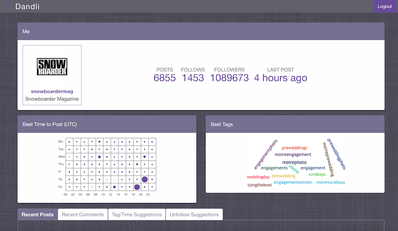
We tackle the engagement problem by solving following common problems for a photographer:
If you are one of those users who receive a considerable amount of comments on your posts, you probably like to first prioritise them, and answer back only negative ones. Answering/considering negative comments on social media (Youtube, Twitter, etc.) has been proven to be essential to keep your fans convinced of your content.
Dandli makes it easier for you by classifying your comments into Positive, Negative and Neutral based on their content with a sentiment analysis tool.
In addition, Dandli sort your comments from all previous posts and show you only the most recent onces, this way you won't miss any of your comments, no matter if it is posted on a new or a very old picture.
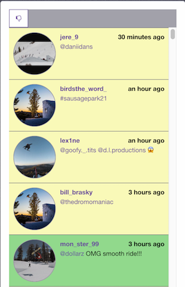
Hashtags are another very important element of social media. If chosen right, they can bring you more audience through the built-in search of Instagram based on Hashtags. A very common problem is that a user does not know which Hashtags to use.
Dandli tackles this problem by assuming that the content of your page is relevant to some other very famous photographers. This way, by analysing the Hashtags of one or more of these famous photographers, it suggests you the most useful Hashtags used by those users.
Let's say you'd like to post a picture of a lion in the nature. If you choose three of your favourite famous professional photographers who take photos of only animals and nature, then you only need to give the name of those users to Dandli and then it gives you back the most useful Hashtags of those users.
If you choose to use one of these Hashtags, just click on it and a small text field with the choosen Hashtag will apear so you can easily copy/past it.
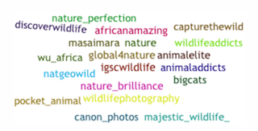
Time to Post is a very important element of social media. It can affect the number of likes you get in a significant way. This problem is also solved exactly the same way Hashtags are solved. You simply need to choose some of your favourite users and then find out which times of posting were the best for those users. Of course, this does not mean the best time to post per se, maybe those users never post at Monday evening, thus we won't have any information of how good Monday evening is. But the goal is rather to find out the best times of posts that works well for those users.
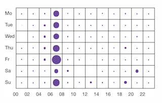
Another subtle problem is to keep your followers-to-following ratio high. Intrinsically, we thing that users with more number of followers, and few number of follows are better to follow, as it may be a sign that their content is of a better quality (Followers are not following you only because they are followed by you mutually, they are following you rather for your content). Often times we follow some active users, in the hope that not only them, but also their followers find us and start following them. But in many cases we may choose a wrong user to follow. Dandli will actively track the users you are following, and rank them based on their recent activity on Instagram. Then the result is a list of your follows sorted by their activities, with the least active ones at the top. Those users at the top may be a good choice for you to unfollow (unless they are friends, or you are simply interested by their content) as it helps keeping the number of your follows low.
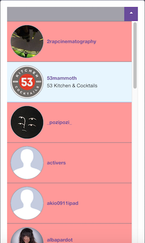
First go to Dandli home page. If you don't have an account already, click on Register to create a new account for yourself, otherwise got to the next step
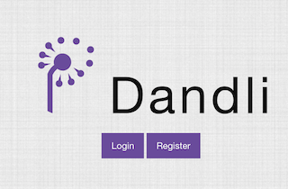
Here you need to choose a username first, put your email address (we won't spam you by no means!) choose a password and finally enter your current Instagram account.
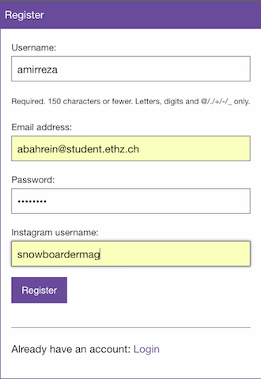
Simply enter your Dandli username and password to login.
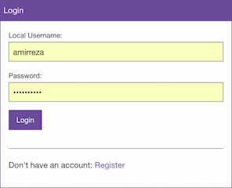
After login, you will be redirected to the Dandli page where you can have an overview of your account. Now let see what other sections are:
Recent posts shows you the list of your recent posts with some overview information about your likes, etc.
In addition, you can see the corresponding comments for each post, where all comments are classified by their sentiments: {Green: Positive, Yellow: Neutral, Red: Negative} You can always click on any of the posts and will be redirected to the corresponding Instagram's page.
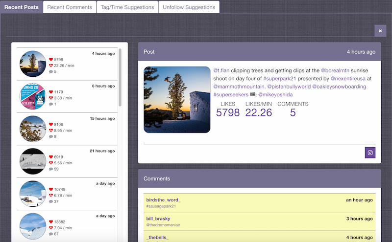
Recent comments main purpose is to sort your recent comments so that you can confortably answer back those comments, even if they are posted on some old photos. This is specially useful if you have a large number of photos. Of course they are also classified to their sentiments: : {Green: Positive, Yellow: Neutral, Red: Negative}.
In addition, you can filter your comments so that only Negative ones are shown. This helps to make it easier to first reply those comments as they have a higher priority. 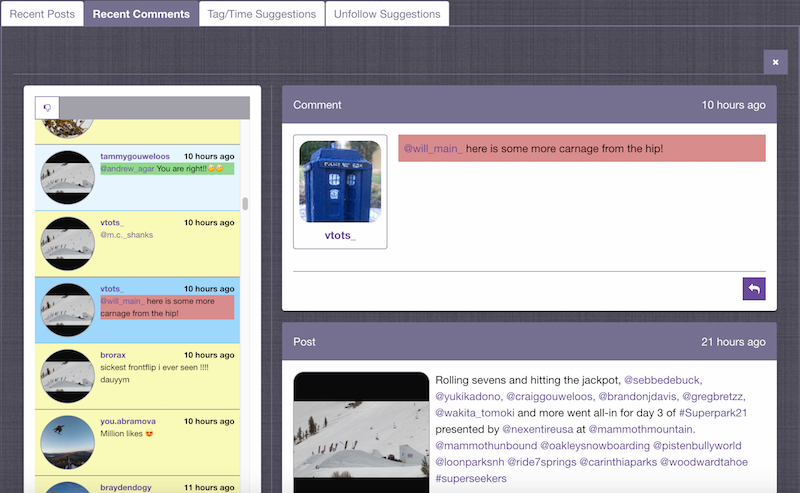
If this is the first time you open this section, you won't have any favourite users yet. You should first add users by their name or username in the Add User. You can add as many as favourite users that you are instersted in.
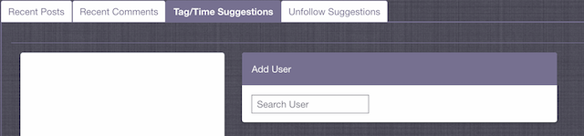
Once a user is added, they will be shown on the list on the left hand side. You can click on them to show more details. There you can see both most efficient tags for these users and most efficient post times for these users.
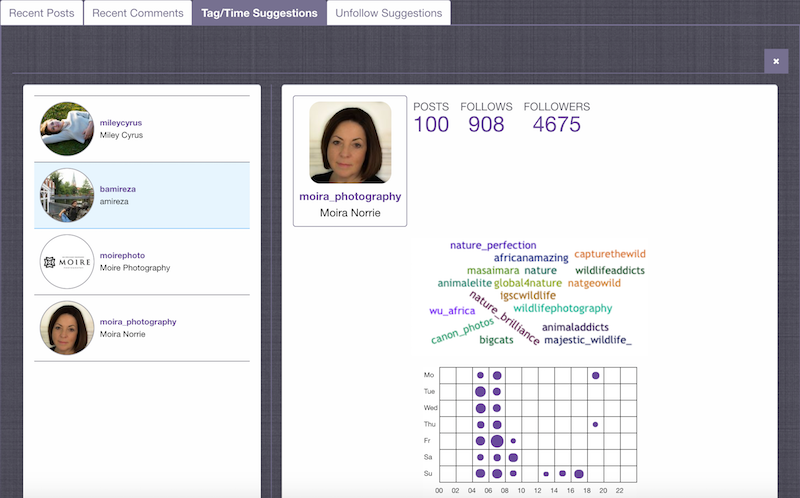
You may wonder how these suggestions are generated. Basically Dandli has a Post_Score for each post of a user. The Post_Score is based on the ratio of number of likes for a post to the number of followers of a user. So the more likes a post gets, and the less followers in general they have the higher Post_Score.
So an efficient Hashtag for a specific user is computed by a combination of total Post_Scores related to that hashtag (over all posts where it has been used) and the total polularity of the hashtag on Instagram. This first criteria makes sure that the hashtag brings indeed more likes, and the second criteria makes sure that the Hashtag is a popular one, and that there is a high chance somebody search it on Instagram and get redirected to your posts.
Post time suggestions are also similar to hashtags, they are based on the Post_Scores for each time slot shown.
This is a list of you follows, sorted by their recent activity. The top user is colored red which indicates that this user is the most inactive of your follows and they can be a good choice to be unfollowed.
The inactivity is based on the average number of post in last two weeks compared to the four weeks before that (6 weeks ago).
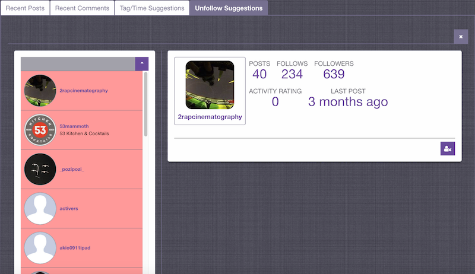